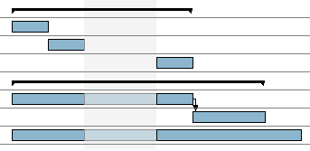

Personnalisation du graphique
GanttProject vous permet de personnaliser l'affichage du diagramme et plus précisément les informations
affichées directement sur le diagramme de Gantt.
Pour accéder à cette fonctionnalité, activez le menu contextuel du graphique et cliquez sur Propriétés du diagramme de Gantt ou
allez dans Affichage, Propriétés du diagramme de Gantt.
Plusieurs informations sont affichables par défaut :
- dates de début et de fin de projet ;
- dates de début et de fin de tâche ;
- nom de la tâche ;
- identifiant de la tâche ;
- durée de la tâche ;
- progression de la tâche ;
- responsable de la tâche ;
- ressources affectées ;
- prédécesseurs.
À l'exception des dates de début et de fin de projet, toutes ces informations sont affichables soit au-dessus,
en-dessous, à gauche ou à droite de la tâche.
Les informations des propriétés personnalisées sont également affichables.
Voici un exemple avec aucune information affichée :

Voici un exemple avec quelques informations :